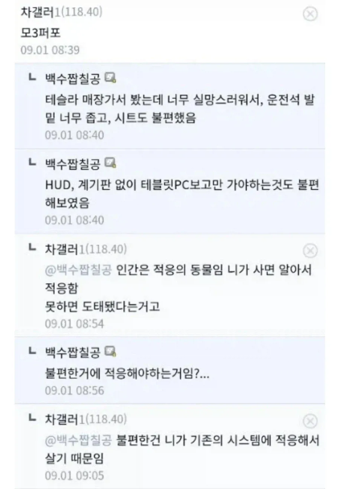
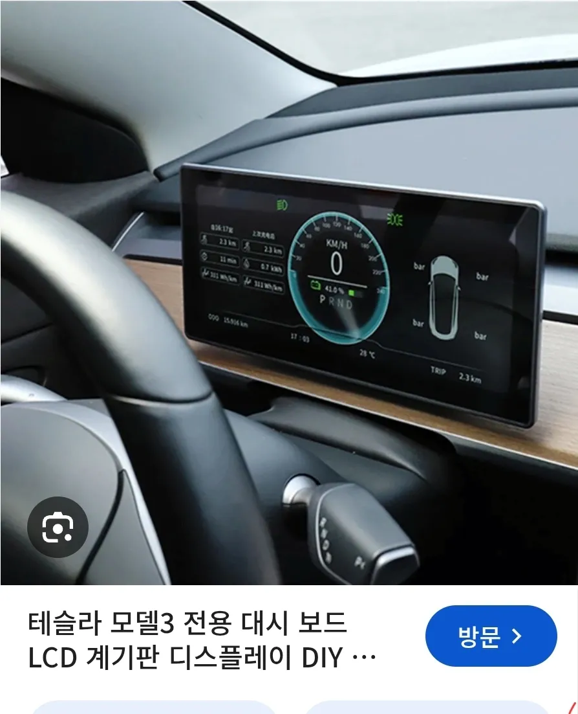
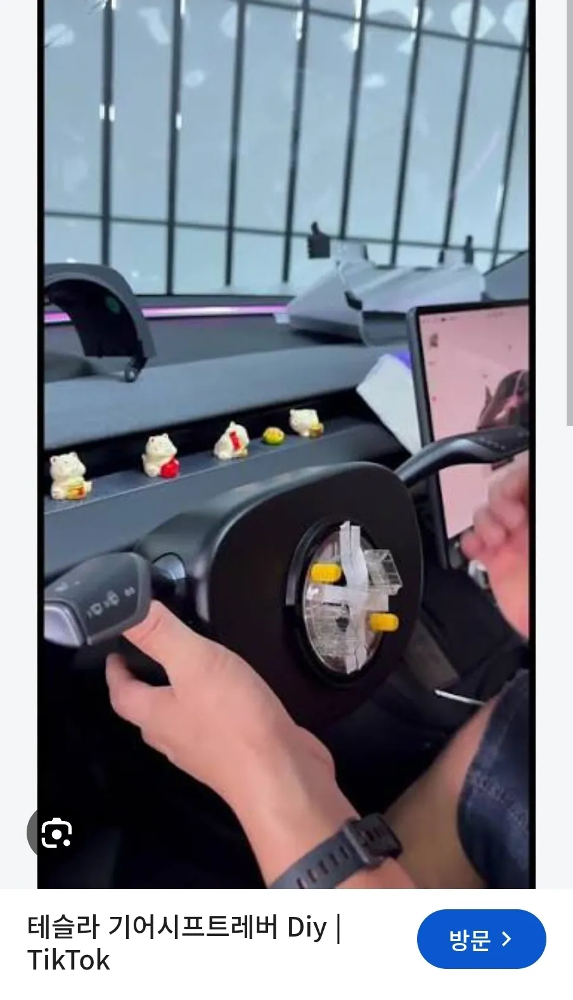
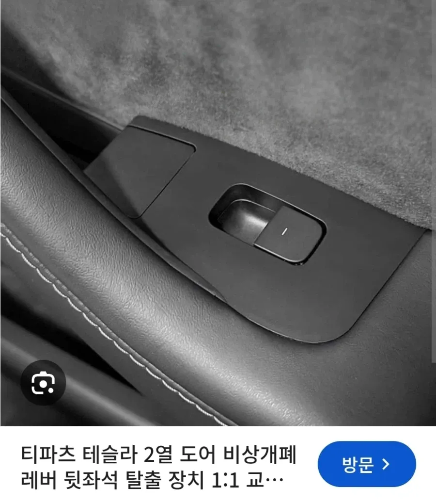
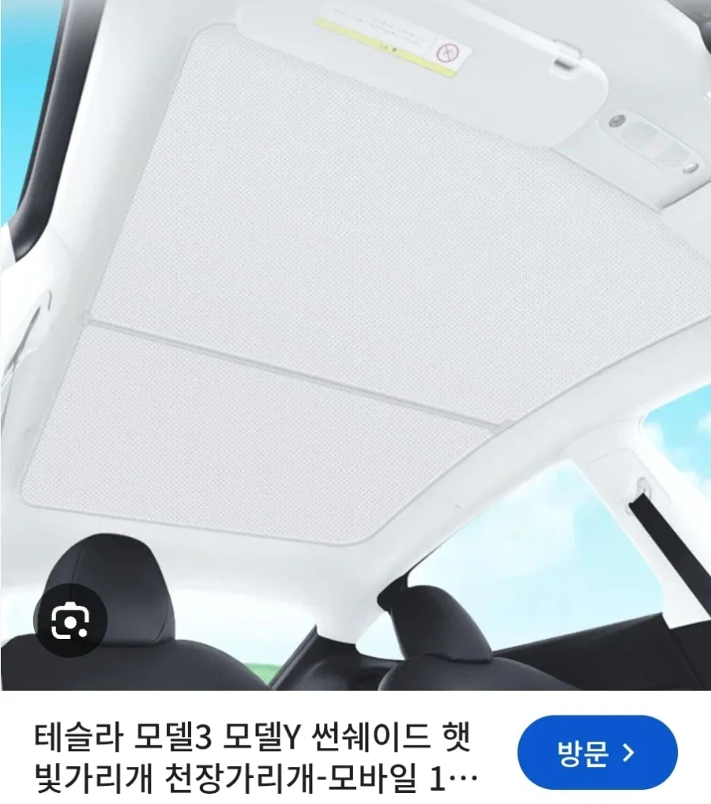

계기판이 없어서 알리에서 계기판 DIY로 셀프시공

터치로 기어 바꾸는게 불편해서 알리에서 기어봉 셀프 DIY

2열 물리 도어개폐장치가 없어서
비상 탈출 위해 계폐레버 알리에서 셀프 DIY

햇빛이 너무 뜨거워 자랑거리인 천장 개방감 포기하고 알리에서 셀프 DIY
테슬라는 알리로 완성한다는 말이 있을정도 인데
불편한걸 불편하다 말 못하고...
난 주니퍼차주인데 알리에서 산건 발매트랑 콘솔 트레이,머드가드 밖에 없음
썬쉐이드도 살까 했는데 주니퍼는 은도금되있대서 안샀음
여름에 2-3시간 주행해도 머리 안뜨겁던데 모델3랑 구형y는 얼마나 뜨거운지 모르겠네
대시보드,기어봉은 불편하면 다른 차 사야지 굳이 없는차 사서 꾸역꾸역 달고다니는게 이상하다고 생각함 저런것도 꽤 비싸던데 말야